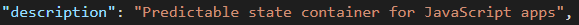
什么是状态？状态其实也就是数据，管理状态也就是对数据的管理。那么什么是可预测的状态管理呢？能够监听数据的变化，获取变化的来源，在发生变化时可以触发某些动作，即为状态管理（个人理解）。
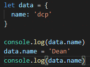
如上所示，就是一个最简单的状态管理，实现了数据基本的管理，但是，并未实现监听数据的变化。因此，此处采用订阅者模式，实现数据变化的监听：
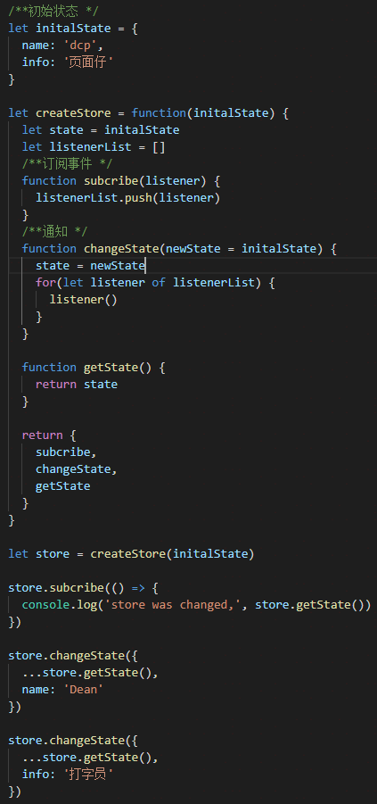
代码很简单，订阅事件&触发事件，实现了监听data状态的变化。以上其实就是Redux的核心内容。项目放在github上，欢迎star
通过changeState方法可以随意更改state，不受控制。
Redux是“可预测的状态管理器”，因此能够引起状态变化的，必须是在我们可预测的范围内。也就是说，如果引起状态的变化不在我们定义好的变化之内，则拒绝处理该变化，Redux是如何做到这一点的呢？talk is cheap, show me the code:
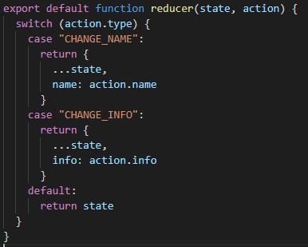
原来如此！通过敢敢单单的switch case语句即可实现。（至于这个方法为什么叫reducer，后面再解释）
原本的createStore里的changeState方法也需要配合改动(方法名字改成dispatch，意为“派发”动作，更符合其功能)：
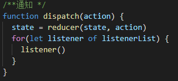
触发动作时，则需要用以下这种形式：
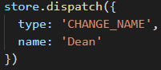
动作发起者： 洞幺洞幺，我是type为“CHANGE_NAME”的动作
处理动作者：收到，已处理完毕，并返回给你变化后的状态，over
动作发起者： 洞尧洞尧，我是type为“cxk”的动作
处理动作者： 非法类型的动作，拒绝处理，返回初始状态，over
当store里的数据比较多时，用同一个reducer处理，必然会导致函数很臃肿：
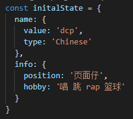
最简单的解决方法，就是按照功能模块对reducer进行拆分：
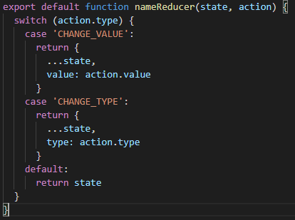
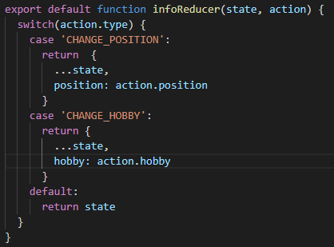
那么接下来要做的就是，如何把多个reducer组合起来，并最终返回变化后的state。首先将多个reducer按照模块的形式组合在一起：
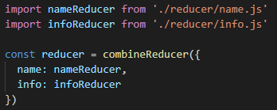
然后编写一个combineReducer方法，当每次dispatch了action，会依次触发所有reducer，并最终返回变化后的state：
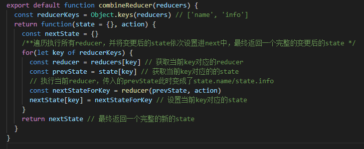
这里可以解释为什么叫reducer了，从上述代码中可以看出，每个reducer其实是（prev， action） => newState这样的一个结构，类似于Array.prototype.reduce的结构，因此称之为reducer。
想必也能猜到问题3是什么了，上文将reducer按照模块拆分了，但是state本身还没有拆分，如果state过于庞杂，也是不好滴。话不多说，拆：
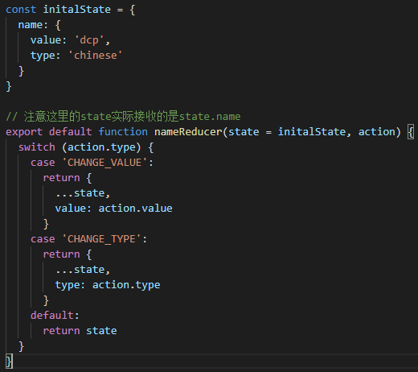
同时，在createStore里新增一句代码，用于初始化整个state：
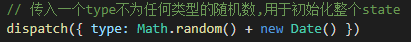
因为type不为任何值，因此所有的reducer都会按照default返回初始值，这样就完成了state的初始化,并且在createStore时，也不用再传入initalState了。
国际惯例，什么是middleware？
它提供的是位于action被发起之后，到达reducer之前的扩展点。你可以利用Redux middleware来进行日志记录、创建崩溃报告、调用异步接口或者路由等等。
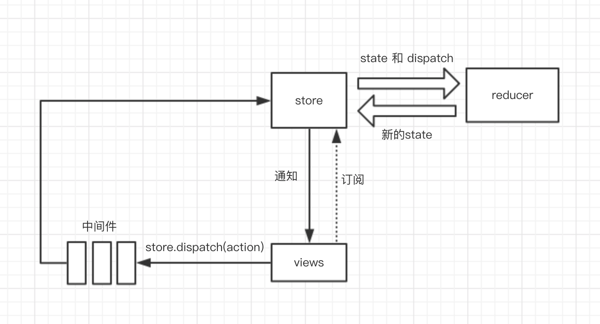
（网上找的）
说白了，middleware就是对dispatch的扩展，可以利用它实现定制化功能。
举个栗子，我们要实现dispatch时，添加一个日志记录的功能，记录一下action触发前后的状态以及是哪个action触发的，那么可以重写dispatch方法：
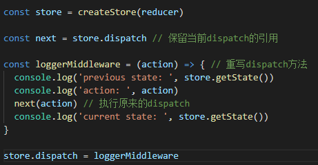
假如说我们这时候又想添加一个创建崩溃报告的功能，那么可以这样重写dispatch方法：
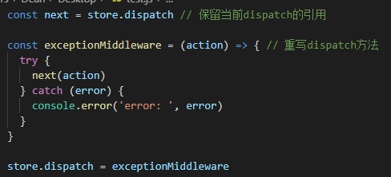
那么问题来了，如果我们想要同时具有这两个功能呢？机智的我一下子就想到了，把这俩写到一起不就ok了？
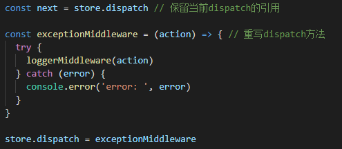
真的是简单到爆了。等等...好像有哪里不对？如果以后想加入更多的功能呢？难道也要把他们都塞进这个新的dispatch方法里面？很明显，不行，那样只会导致dispatch方法越来越臃肿，难以维护。根据我们多年的经验，必然是又要进行拆分了。
从上面的loggerMiddleware和exceptionMiddleware的合作上，可以看出，多个中间件之间的调用顺序应该是类似于
A = (action) => { B(action) }
这样的一种链式结构。为了使middleware更为通用，应该将B作为参数传递进去，因此，可以写出这种结构：
A = (B) => (action) => { B(action) }
这时候会发现，在任意一个中间件里，都有可能用到store，因此，将store作为顶级参数传递进去：
A = (store) => (B) => (action) => { B(action) }
代码如下：
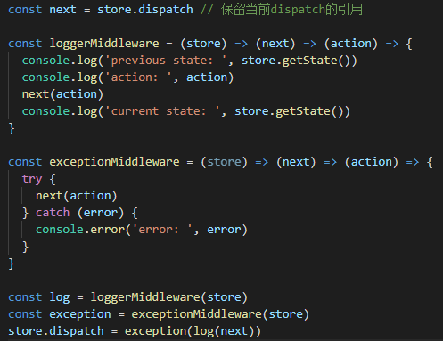
每次使用中间件时，都要写一些重复的代码。因此Redux内部有一个方法，可以实现这种链式调用：
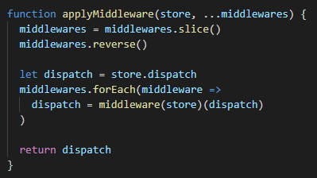
（简单的示例，实际的方法比这个更为复杂）
方法实现的比较巧妙，每次将经过上一个中间件处理过的dispatch作为参数传递给下一个中间件，这样就形成了链式调用：
store.dispatch = applyMiddleware(store, loggerMiddleware, exceptionMiddleware)
在实际项目中，异步是不可避免的。之前的代码中，当我们每次dispatch一个action时，action只能是一个plain object(普通对象，这里指的是直接继承于Object的对象)，否则reducer无法成功解析(按照官方文档的意思，action必须是“可序列化的”,这部分暂时不是很理解)。
和 state 一样，可序列化的 action 使得若干 Redux 的经典特性变得可能，比如时间旅行调试器、录制和重放 action。若使用 Symbol 等去定义 type 值，或者用 instanceof 对 action 做自检查都会破坏这些特性。字符串是可序列化的、自解释型，所以是更好的选择。
因为性能原因，我们无法强制序列化 action，所以 Redux 只会校验 action 是否是普通对象，以及 type 是否定义。
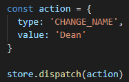
然鹅在实际开发中，存在大量的异步场景，例如最常见的请求调用。我们可以利用中间件，让dispatch可以直接接收一个Function类型的action。Redux就提供了这样一个中间件redux-thunk：
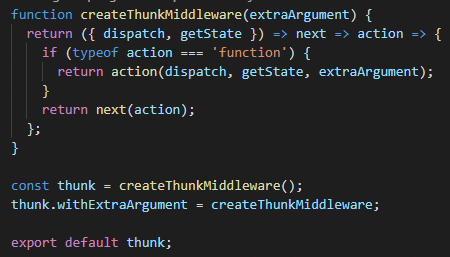
代码其实也很简单，判断了一下action是否是函数，是的话则执行这个action。用这个中间件去增强dispatch的功能，就可以按照下面这种形式写异步的action了：
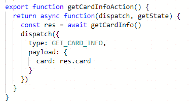
调用时：
dispatch(getCardInfoAction())
tips：无论嵌套执行了多少个middleware，最终被dispatch的那个action，仍然必须是一个plain object，将处理流程变回同步方式。
当 middleware 链中的最后一个 middleware 开始 dispatch action 时，这个 action 必须是一个普通对象。这是 同步式的 Redux 数据流 开始的地方（译注：这里应该是指，你可以使用任意多异步的 middleware 去做你想做的事情，但是需要使用普通对象作为最后一个被 dispatch 的 action ，来将处理流程带回同步方式）。
到这里，redux的大部分功能其实已经基本实现了，剩余的还有一些细节部分，例如将f1 => f2 => f3(action)这种链式调用变为f1(f2(f3(action)))这种调用形式的compose方法（用在applyMiddleware方法内部）；createStore方法添加有中间件/无中间件的处理；store.subscribe订阅后的退订以及各种判断的处理等。
Redux的源码短小精悍，使用纯JavaScript实现，不依赖任何第三方库，因此也适用于各种框架。其完整的流程图：
参考：